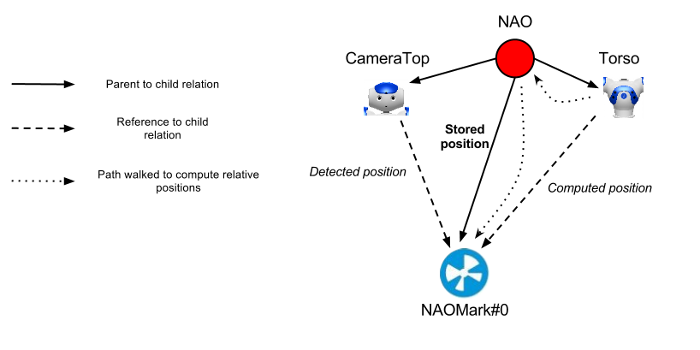
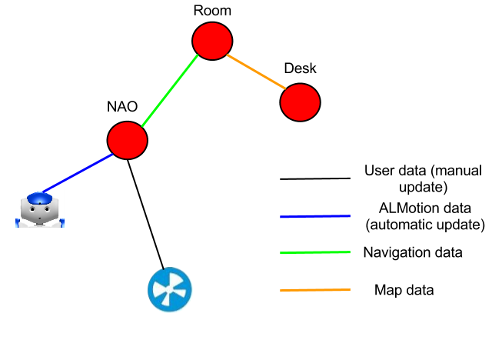

ALWorldRepresentation¶
Overview | API
What it does¶
ALWorldRepresentation is a module dedicated to the long term storage of data about generic objects. It allows you to persistently store some data, but also to make some generic queries on the stored data with intelligent criterions.
When to use it¶
This module should be used when you want to store some public, long term data, and to make high level spatial and data queries on it. For example, you can use it to store data on detected people, information for the dialog etc.
How it works¶
ALWorldRepresentation stores in parallel a hierarchical spatial structure of the objects and a generic database containing information on these objects.
{kind=link}
Global architecture and example of possible objects and databases in the world representation.
Spatial structure¶
Principle¶
Objects are stored in a common graph. Edges of the graph correspond to a geometric transformation from one object frame to the other (stored as transform matrices).
The graph contains one root frame, which corresponds to a fixed, absolute frame. Typically, the root frame can be the robot itself if the world representation is centered on it.
Through this graph structure, it is possible to compute the position of any object frame compared to any other object, by walking the edges of the graph on a path from one object to another. The module uses classical path finding algorithms to determine the shortest path from one frame to the other.
Whenever an edge is modified (i.e. the corresponding transform is modified), the modification is propagated to all children. This means that all children object will move rigidly with the parent object.
Each object has an associated database, in which non-spatial data can be stored.
Implementation¶
The spatial graph structure is implemented using boost::graph which offers a generic structure for graphs and implements classical graph algorithms (shortest path etc).

Hierarchical structure and relative positions |

Different link types in the graph. |
{kind=link}
{kind=link}
It is possible to include different link types in the robot.
Database structure¶
Principle¶
The non-spatial information is stored in a set of SQL databases. Each database deals with one type of object, and is split in tables to store various kind of information.
Each table contains rows and columns. The columns correspond to the stored fields: they have both an identifier (a case insensitive name) and a value. The value can have any of the standard C++ types, or be a blob (the equivalent of a void*).
It is possible to add new rows to the database (possibly with empty fields) or to update some rows. It is also possible to make some requests on each of the tables, using SQL criterions: these criterions are a combination of operators on the columns, for example “Field1 < 1.0 AND Name=’somename’”. A select request returns the set of rows which match the criterion, possibly ordered on some column value. An update or a delete request respectively updates or deletes the rows matching the criterion.
Warning
Pay particular attention to the criterions you use. If you delete rows with a criterion that is always true, you will delete all rows of the table with no possibility to undo.
Implementation¶
The databases are stored and accessed through SQLite, which provides a C/C++ API to SQL databases. ALWorldRepresentation provides a wrapper on this library.
The databases are stored and accessed in a safe way, which means that they are very robust to crashes: the data inside is never corrupted.
To visualize (and even edit) your databases offline, you can use the following Firefox plugin (Tools -> SQLiteManager). Databases are saved on the robot in /home/nao/.local/share/worldrepresentation.
Performances and limitations¶
SQLite 3 stores the databases directly on disk. This means that if the storing is called very frequently, then there will be a lot of disk access and thus CPU consuming. The ideal is not to go over 10 updates a second.